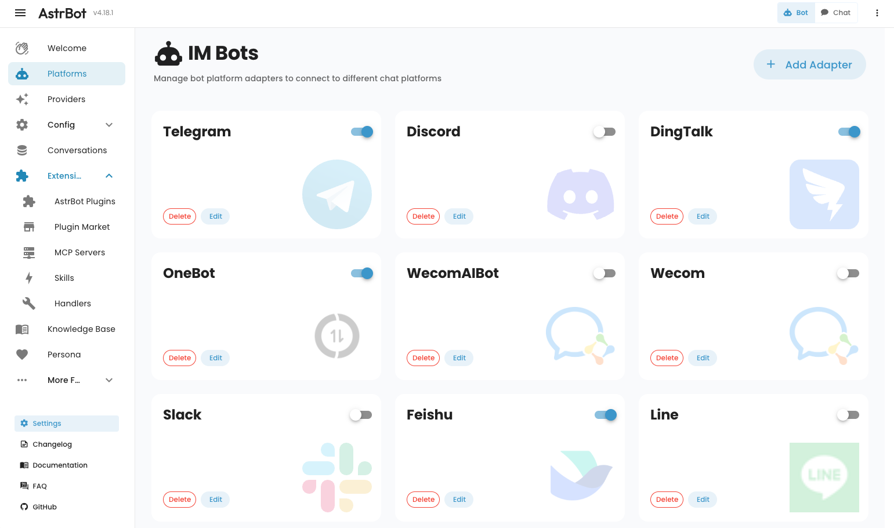

从零到一：用 AstrBot 在 QQ 群里挂一个自己的 AI 助手
这篇文章带你从什么都不懂，到把一个会聊天、能管理群的 AI 助手挂进 QQ 群。不需要编程基础，跟着走五分钟就能跑通。
这篇文章能带你从完全不懂到把 AI 助手挂进 QQ 群里用起来，不需要任何编程基础，跟着走就行。
它到底是干嘛的——用一个生活化类比讲明白
你可以把 AstrBot 想象成一个"AI 总机"。
你的 AI 模型（比如 GPT、豆包、文心一言）是大脑，但大脑不会自己跑到 QQ 群、微信群、Telegram 里去跟人说话。AstrBot 就是中间那个"翻译官兼接线员"——它一头连着你的 AI 模型，另一头连着各种聊天平台，把群里人说的话转成 AI 能懂的格式送过去，再把 AI 的回复转回平台消息发回来。

就这么一层薄薄的中间件，让你不用分别给 QQ、微信、Telegram 各写一套对接代码——装一次，各平台通用。而且它自带管理面板，在它的官方网站上能看到完整的特性列表，所有配置点鼠标就能改，不用翻配置文件。
五分钟上手：从下载到第一次跑通
别急着装，先理解一个关键概念：AstrBot 自己不连 QQ，它需要一个协议端。这个协议端负责真的去跟 QQ 服务器说话，AstrBot 跟协议端之间用一种叫"反向 WebSocket"的方式通信。你现在不用记这个名词，知道要装两个东西就行：AstrBot 本体 + 协议端（国内 QQ 圈最常用的是 NapCat）。
第一步：下载并启动 AstrBot 本体
安装方法很简单，去官方下载拿对应你系统的版本，解压后运行启动脚本。Windows 用户找 .bat，Linux 用户找 .sh。启动后浏览器会自动弹出一个地址（默认是 http://localhost:8080），这就是你的管理面板。
打开面板后先别急着配置别的，点左侧最下面那个"配置文件"，找到"对话模型"这一栏——你得先告诉 AstrBot 用哪个 AI 模型说话。这里填你的模型服务商地址、API Key 和模型名，保存就行。
第二步：部署 NapCat
NapCat 是 QQ 协议端，它跑起来后会拿着一个真正的 QQ 号去跟 QQ 服务器通信。这个 QQ 号就是你的机器人号——一定要是你自己能扫码登录的号，别用常用号，最好专门注册一个小号来当机器人。
NapCat 的安装也很简单，Windows 下载解压后双击启动，Linux 有一键脚本。启动后它会弹出一个二维码窗口，用你选定的 QQ 号扫码登录。
第三步：把两头接起来
这是最关键的一步。先回到 AstrBot 管理面板，左侧点"消息平台"，点"+ 创建机器人"，类型选 OneBot v11，端口保持默认的 6199，保存。
然后打开 NapCat 的管理页面（地址在 NapCat 启动日志里能看到），进"网络配置"→"新建"→"WebSockets 客户端"，URL 填 ws://127.0.0.1:6199/ws，勾选启用，保存。
第四步：验证
回到 AstrBot 面板，点左侧"日志"，盯着看。几秒后如果出现一行蓝色的 aiocqhttp(OneBot v11) 适配器已连接，就成了。

现在拿另一个 QQ 号给你的机器人号发条消息，它应该会回复。跑通了。
上手后先玩这三个功能
跑通只是个开始。下面三个功能是新手最值得先碰的，每个都能让你"哇一声"。
功能一：给机器人立个人格
默认人格说出来的话比较"中性"，像个没有感情的问答机器。你可以给它一个人设——比如"专业又亲切的 AI 客服，回答简洁礼貌"或者"活跃的群友，爱开玩笑但别乱说话"。
操作路径：左侧菜单点"人格设定"，新建一个人格，在"人设提示词"里写你想要的身份、语气、边界。写完保存，然后去"配置文件"里把默认人格换成你刚建的那个。
你会发现：同一个 AI 模型，换了人格，说话风格完全不一样。这不是玄学——人格本质就是一段系统提示词，加上一组可用工具的勾选，决定模型"是谁、能干什么"。关于人格提示词的写法技巧和多人格分配的高级配置，可以去astrbot文档查，上面每个平台的接入都有详细步骤。
功能二：看看它今天干了多少活
左侧菜单点"统计"，你会看到一整个汇总看板：今天接了多少消息、调用了多少次模型、Token 花了多少、哪个平台消息最多。可以按 1 天、3 天、1 周切换范围。
这意味着什么？你终于不用靠感觉猜"机器人有没有在工作"，数字摆在那里，一目了然。Token 消耗这一栏尤其有用——帮你省钱的关键就是盯着这个数。
功能三：接个第二个平台试试
跑通 QQ 后，试试再挂一个企业微信或者 Telegram。操作流程跟接 QQ 类似：先在 AstrBot 里创建对应类型的机器人实例，再去平台那边配置回调地址。
多平台并存的好处是你可以给不同来源配不同人格——QQ 群用"活跃群友"人格，企业微信群用"严谨客服"人格，互不干扰。这个在面板的"会话管理 / 自定义规则"里配置，不用建两套 AstrBot。
小白的三个常见疑问
Q：我改了人格，机器人说话完全没变，怎么回事？
八成是两件事之一：要么你改的不是当前会话在用的那个人格，要么改完没去"配置文件"里把默认人格切换过去。人格不直接全局生效，链路是"人格设定页改 → 配置文件选使用哪个人格 → 对话按所选人格运行"，三步缺一不可。
Q：NapCat 启动后要不要把端口暴露到公网？
千万别。NapCat 持有你的 QQ 登录态，暴露端口等于把账号直接交出去。只有一种情况需要暴露：AstrBot 跑在公网服务器上而 NapCat 跑在你本地，这时候才需要内网穿透或者公网地址。但对新手来说，AstrBot 和 NapCat 都跑在同一台机器上就行，本地通信不走公网，安全得很。
Q：微信为什么没有个人微信接入？
个人微信没有开放的机器人接口，任何直接操作个人微信的方案都在灰色地带，AstrBot 的官方文档也不提供此类接入。想挂在微信体系里，正规路径就是企业微信应用或者微信公众号——好在这两个入口的开放接口都相当完善，企微自建应用能收发文本、图片、文件，公众号门槛更低，个人订阅号就能玩。
接下来怎么走
跑通 QQ、立了人格、看了统计——这时候你已经是 AstrBot 的合格使用者了。下一步建议试试知识库功能：把你们团队的文档或者产品手册传进去，机器人就能基于这些资料回答问题，比单纯的通用问答靠谱得多。
这条路走通了，你会发现自己其实已经搭了一个能用的 AI 客服系统。这套搭建记录我同步放在了GitHub、Gitee和GitCode三个仓库，国内直连 Gitee 或 GitCode 速度更快。而这一切，就是从下载解压、扫码登录、填几个端口号开始的。